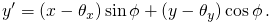

The Crowded-field problem
High spatial densities of activated molecules can result in a ‘‘crowded field problem,’’ in which single molecules are not adequately resolved. The reason for this is the limitation of the PSF models described above to fit only a single molecule. To help solve this problem, ThunderSTORM uses a multiple-emitter fitting analysis (MFA) approach similar to the algorithm described in [2].
Multiple-emitter fitting analysis
The multiple-emitter fitting analysis approach uses a PSF defined by a model
 |
(1) |
where  is a number of molecules allowed in the fitting region,
and
is a number of molecules allowed in the fitting region,
and  are parameters describing position and shape of the imaged molecules
modeled by the PSF.
are parameters describing position and shape of the imaged molecules
modeled by the PSF.
The fitting of multiple-emitter models to the raw data proceeds according
to the following algorithm. First, the algorithm fits  (a single molecule model) with an initial molecular position. The
fitted PSF is subtracted from the raw data and the position of the
maximum intensity value in the residual image is taken as an approximate
position of a second molecule. The fitting is now repeated on the
raw data with
(a single molecule model) with an initial molecular position. The
fitted PSF is subtracted from the raw data and the position of the
maximum intensity value in the residual image is taken as an approximate
position of a second molecule. The fitting is now repeated on the
raw data with  (a model containing two molecules)
and with the initial positions estimated in the previous steps. The
result of the fit is subtracted from the raw data to find an approximate
position of a third molecule in the residual image. This routine is
repeated until the maximum number of molecules allowed in the fitting
region is reached. Note that initial positions of the molecules are
further adjusted, during the multiple-emitter fitting analysis, by
a ‘‘Push&Pull" process [2]. To find
the optimal number of molecules, statistical tests are required, see
Section Model selection.
(a model containing two molecules)
and with the initial positions estimated in the previous steps. The
result of the fit is subtracted from the raw data to find an approximate
position of a third molecule in the residual image. This routine is
repeated until the maximum number of molecules allowed in the fitting
region is reached. Note that initial positions of the molecules are
further adjusted, during the multiple-emitter fitting analysis, by
a ‘‘Push&Pull" process [2]. To find
the optimal number of molecules, statistical tests are required, see
Section Model selection.
Users can specify the size of the fitting region, the maximum number of molecules allowed in one fitting region, the type of PSF, and the fitting method (least-squares methods or maximum likelihood estimation). Optionally, users can constrain the multiple-emitter fitting algorithm such that all fitted molecules have the same intensity or an intensity in a given range. The background offset is constrained to the same intensity for all fitted molecules.
Model selection
Because a model with more parameters will always be able to fit the
data at least as well as a model with fewer parameters [3, 1],
statistical tests are required to determine whether the more complex
model provides a significantly better fit of the underlying data.
Statistical tests are usually based on pair-wise model comparison.
Here a fit by  is compared with a fit by
is compared with a fit by  ,
the better of the two is compared with a fit by
,
the better of the two is compared with a fit by  ,
etc. Pair-wise comparisons are based on an F-test [3, 1]
or on a log-likelihood ratio test [3, 2] as
described below.
,
etc. Pair-wise comparisons are based on an F-test [3, 1]
or on a log-likelihood ratio test [3, 2] as
described below.
F-test
An F-test [3, 1] arises in the case of fitting by least squares methods, when we need to compare significance of the fit between two models, where one model (the null model) is a special case of the other (the alternative model) for some choice of parameters. The F-test statistic computed from the data is given by the formula
 |
(2) |
where the sum of squared residuals  computed for a model with parameters
computed for a model with parameters  is defined
here, vectors
is defined
here, vectors  and
and
 are parameters of the null and alternative
model, respectively,
are parameters of the null and alternative
model, respectively,  and
and  (where
(where  )
represent the number of free parameters of the null and alternative
model, respectively, and
)
represent the number of free parameters of the null and alternative
model, respectively, and  is the number of data points within
the fitting region
is the number of data points within
the fitting region  .
.
Assuming the null hypothesis that the alternative model does not provide
a significantly better fit than the null model, the F-test statistics
computed in Equation (2) has an F-distribution with
 degrees of freedom. The null hypothesis
is rejected if
degrees of freedom. The null hypothesis
is rejected if  computed from
the data is greater than the critical value of the
computed from
the data is greater than the critical value of the  distribution for a user-specified
distribution for a user-specified  -value.
-value.
Log-likelihood ratio test
To compare between the fits of two models, in the case of fitting by the maximum likelihood estimation method, we use a model selection criteria based on a log-likelihood ratio test [3, 2]. Assuming that one model (the null model) is a special case of the other (the alternative model) for some choice of parameters, the log-likelihood ratio is given by the formula
|  | (3) |
where the likelihood  of parameters
of parameters  is defined here,
is defined here,
 and
and  are the
parameters of the null and alternative model, respectively, and
are the
parameters of the null and alternative model, respectively, and  is a fitting region.
is a fitting region.
The probability distribution of the log-likelihood ratio computed
in Equation (3), assuming the null hypothesis that
the alternative model does not provide a significantly better fit
than the null model, can be approximated by the  distribution
with
distribution
with  degrees of freedom. This approximation is usually
valid even for small sample sizes [3]. Here
degrees of freedom. This approximation is usually
valid even for small sample sizes [3]. Here  and
and  (where
(where  ) represent the number of free parameters
of the null and alternative models, respectively. The null hypothesis
is rejected if the log-likelihood ratio
) represent the number of free parameters
of the null and alternative models, respectively. The null hypothesis
is rejected if the log-likelihood ratio  computed from the data is greater than the critical value of the
computed from the data is greater than the critical value of the  distribution for some
distribution for some  -value specified by the users.
-value specified by the users.
Guidelines for the choice of parameters
Multiple emitter fitting analysis (MFA) can be used in high-density data to estimate the number of molecules detected as a single blob. We recommend setting 3 to 5 molecules per fitting region. The stability of the algorithm is improved if the molecular brightness is limited to a realistic range (perhaps 300 to 5000 photons), depending on the sample. This range can be estimated by ThunderSTORM by processing a few frames of the data and evaluating the number of detected photons from each molecule using the histogram function (this relies on correct entry of the camera parameters). The algorithm can also be more stable by forcing all molecules to have the same intensity. Unfortunately, multiple emitter analysis is a computationally costly method, and may run quite slowly depending on the user-specified maximum number of molecules within the fitting area. Note that the size of the fitting radius might need to be increased slightly to accommodate larger blobs.
References
- [1] (2003) Data reduction and error analysis for the physical science. McGraw-Hill Higher Education, McGraw-Hill. External Links: ISBN 9780072472271 Cited by: F-test, Model selection.
- [2] (2011) Simultaneous multiple-emitter fitting for single molecule super-resolution imaging. Biomedical Optics Express 2 (5), pp. 1377–93. External Links: Document Cited by: Multiple-emitter fitting analysis, Log-likelihood ratio test, Model selection, The Crowded-field problem.
- [3] (1979) The Advanced Theory of Statistics. London: Charles Griffin. Cited by: F-test, Log-likelihood ratio test, Log-likelihood ratio test, Model selection.
![[LOGO]]()